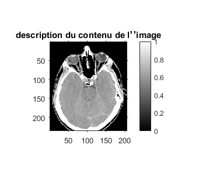
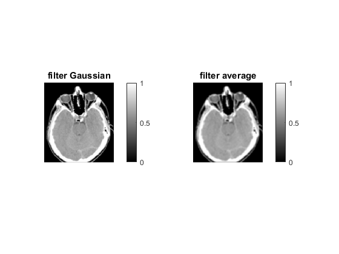
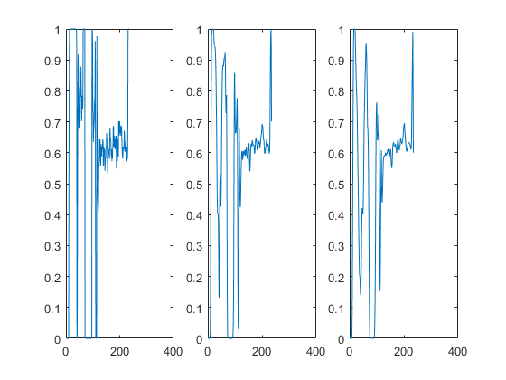
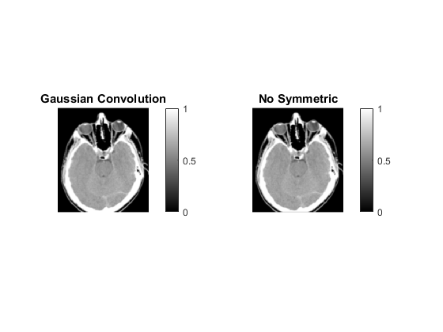
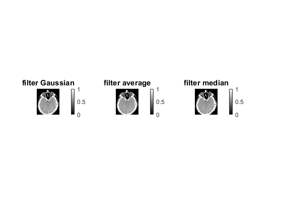
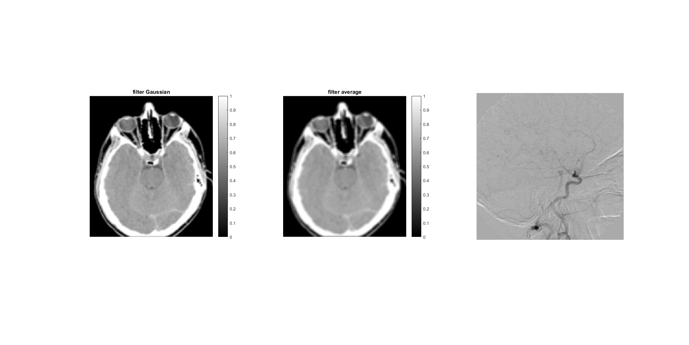
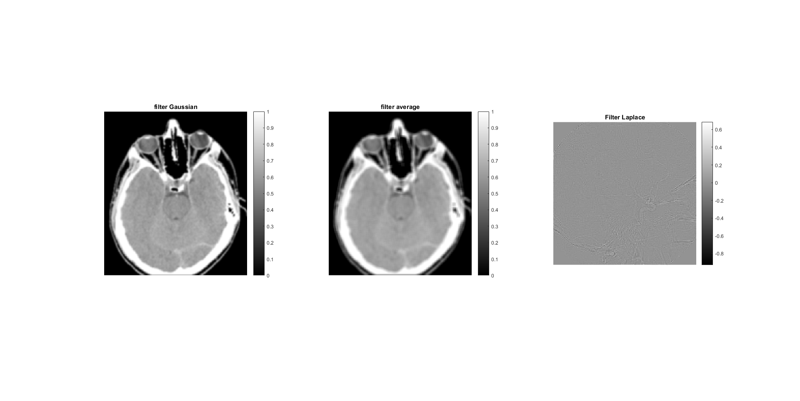
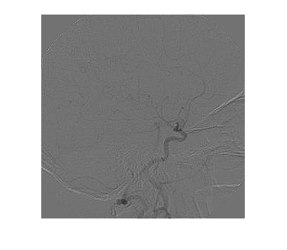
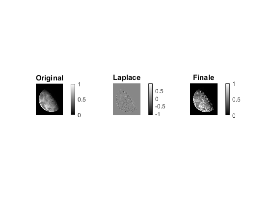

TD2 ZHOU-Nan
Contents
Question 0
I=imread('Tomographie_RayonsX.png') ;
I=double(I)/255;
figure;
imshow(I,[]);
colorbar;
axis on ;
title('description du contenu de l’’image');

Question 1
Mm=ones(5,5)/25;
Mg=fspecial('gaussian',5,1);
Ifg=imfilter(I,Mg);
Ifm=imfilter(I,Mm);
figure
subplot(1,2,1);imshow(Ifg);colorbar;title('filter Gaussian');
subplot(1,2,2);imshow(Ifm);colorbar;title('filter average');

Question 2
subplot(1,3,1);plot(I(:,100));
subplot(1,3,2);plot(Ifg(:,100));
subplot(1,3,3);plot(Ifm(:,100));
hold on;

Question 3
Ibruit_gauss=imnoise(I,'gaussian',0.1,0.02);
imshow(Ibruit_gauss);
Question 4
IfgConv=imfilter(I,Mg,'conv','symmetric');
IfgConv1=imfilter(I,Mg,'conv');
figure
subplot(1,2,1);imshow(IfgConv);colorbar;title('Gaussian Convolution');
subplot(1,2,2);imshow(IfgConv1);colorbar;title('No Symmetric');

Question 5
Ifme=medfilt2(I,[3,3]);
Ibruit_ps=imnoise(I,'salt & pepper') ;
figure
subplot(1,2,1);imshow(Ifme);colorbar;title('filter median');
subplot(1,2,2);imshow(Ibruit_ps);colorbar;title('salt&pepper');
Question 6
figure
subplot(1,3,1);imshow(Ifg);colorbar;title('filter Gaussian');
subplot(1,3,2);imshow(Ifm);colorbar;title('filter average');
subplot(1,3,3);imshow(Ifme);colorbar;title('filter median');

Question 7
fond=double(imread('angiographie_fond.tif'))/255;
image=double(imread('angiographie_image.tif'))/255;
Img=image-fond;
imshow(Img,[]);

Question 8
Mlap=[1,1,1;1,-8,1;1,1,1];
Ifl=imfilter(Img,Mlap);
imshow(Ifl,[]);colorbar;title('Filter Laplace');

Question 9
Image_finale=Img-Ifl;
imshow(Image_finale,[]);

Question 10
Question 11
moon=double(imread('Blurry_moon.tif'))/255;
Ifl_moon=imfilter(moon,Mlap);
moon_finale=moon-Ifl_moon;
figure
subplot(1,3,1);imshow(moon);colorbar;title('Original');
subplot(1,3,2);imshow(Ifl_moon,[]);colorbar;title('Laplace');
subplot(1,3,3);imshow(moon_finale);colorbar;title('Finale');
